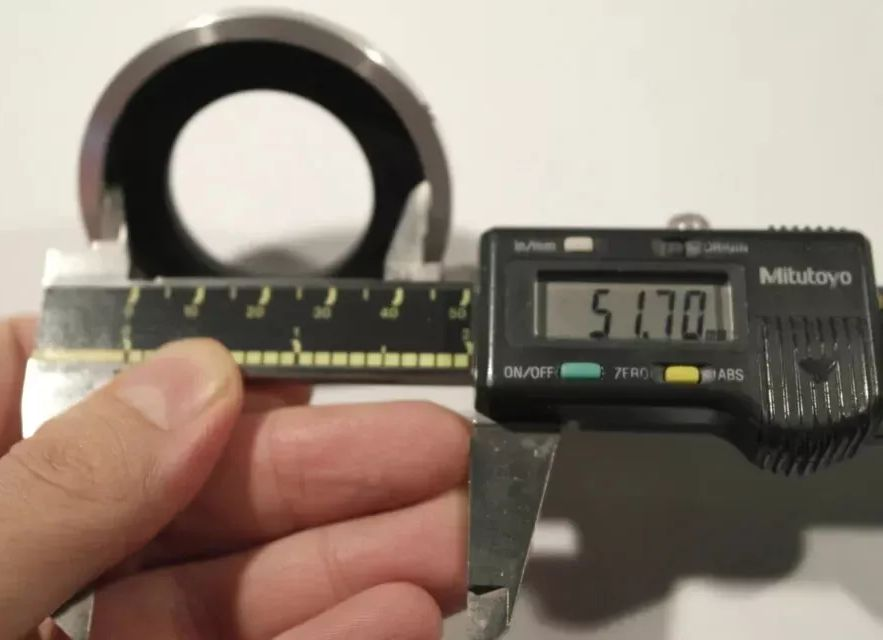

back

Finite Optiphot heads attach by 49.5mm circular dovetail;
infinity Nikons use 51mm circular dovetail.
Optiphot 100 and 150 accomodate those differences in their vertical (EPI) illuminator;
this adapter enables using a finite EPI illuminator or none.
Nikon Labophot Optiphot Dovetail to Nikon LV-TI3 Trinocular
eBay item number: 305710776573
Condition: New - Open box
Brand: Madrid Sky

- Description:
- Custom adapter for microscope or telescope or optical proyects.
Originally designed to mount a Nikon LV-T13 trinocular on a Labophot/Optiphot.
Includes 6 screws (3 small grubs + 3 thumb screws).
Inner painted matte black to avoid light reflections.
- Measures:
- Inner diameter 33mm. Outter diameter=60mm.
Inner diameter to hold parts = 51.9mm.
Dovetail is 48.5mm (big portion) 44.5mm (small portion).
received 26 Aug
Threaded holes for screws to retain infinity head male dovetail are not angled, as are Nikon's.
Included thumbscrews cannot be used; knobs are too large to clear Nikon heads:
 Included grub screws are cup point; replaced with cone point for retaining dovetail.
Included grub screws are cup point; replaced with cone point for retaining dovetail.
|